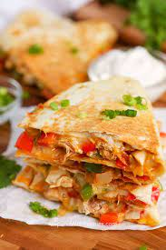

Chicken Quesadillas

Chicken quesadillas are a great snack food. Chicken, peppers and cheese combined to make a fun party food. Easy to make and easy to eat.
Ingredients
- 1 pound skinless, boneless chicken breast, diced
- 1 packet fajita seasoning
- 1 tablespoon vegetable oil
- 2 green bell peppers, diced
- 2 red bell peppers, chopped
- 1 onion, chopped
- 10 flour tortillas
- Shredded Cheddar cheese
- Shredded Monterey Jack cheese
- Bacon bits
Directions
- Preheat the broiler. Grease a baking sheet.
- Toss chicken with fajita seasoning, then spread onto the baking sheet. Place under the broiler and cook until chicken is no longer pink in the center, about 5 minutes.
- Preheat the oven to 350 degrees F (175 degrees C).
- Heat oil in a large saucepan over medium heat. Stir in bell peppers, onion, and broiled chicken. Cook and stir until vegetables have softened, about 10 minutes.
- Layer half of each tortilla with chicken and vegetable mixture, Cheddar cheese, Monterey Jack cheese, and bacon bits. Fold tortillas in half and place onto a baking sheet.
- Bake quesadillas in the preheated oven until cheeses have melted, about 10 minutes.
- Cut each quesadilla into 4 wedges and serve.